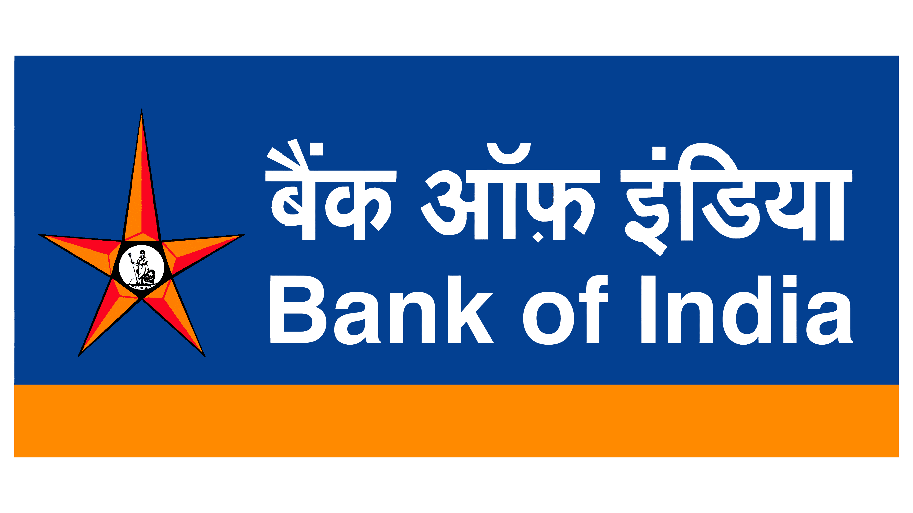

Indian Public Sector Bank
There are 12 public sector banks in India
Public Sector Undertakings (Banks) are a major type of government-owned banks in India, where a majority stake (i.e., more than 50%) is held by the Ministry of Finance (India) of the Government of India or State Ministry of Finance of various State Governments of India. The shares of these government-owned-banks are listed on stock exchanges. Their main objective is social welfare.
| Logo |
Name |
Govt Share Holding |
Headquarter |
|
State Bank of India |
57.59% |
Mumbai, Maharashtra |
|
Union Bank of India |
83.49% |
|  |
Bank of India |
81.41% |
 |
Central Bank of india |
93.08% |
|
Bank of Maharashtra |
90.97% |
Pune,Maharashtra |
|
Bank of Baroda |
63.97% |
Vadodara, Gujarat |
|
Punjab National Bank |
73.15% |
Dwarka, NCT of Delhi |
|
Punjab & Sind Bank |
97.07% |
New Delhi, NCT of Delhi |
 |
UCO Bank |
95.39% |
Kolkata, West Bengal |
 |
Indian Bank |
79.86% |
Chennai, Tamil Nadu |
|
Indian Overseas Bank |
96.38% |
 |
Canara Bank |
62.95% |
Bengaluru, Karnataka |
Presently there are 43 Regional Rural Banks in India.
Regional Rural Banks (RRBs) are government owned scheduled commercial banks of India that operate at regional level in different states of India. These banks are under the ownership of Ministry of Finance, Government of India, Sponsored Bank and concerned State Government in the ratio of 50:35:15 respectively. They were created to serve rural areas with basic banking and financial services. However, RRBs also have urban branches.
-
Andhra Pradesh
- Andhra Pragathi Grameena Bank
- Chaitanya Godavari Gramin Bank
- Saptagiri Gramin Bank
-
Arunachal Pradesh
- Arunachal Pradesh Rural Bank
-
Assam
-
Bihar
- Dakshin Bihar Gramin Bank
- Uttar Bihar Gramin Bank
-
Chhattisgarh
-
Chhattisgarh Rajya Gramin Bank
-
Gujarat
- Baroda Gujarat Gramin Bank
- Saurashtra Gramin Bank
-
Haryana
- Sarva Haryana Gramin Bank
-
Himachal Pradesh
- Himachal Pradesh Gramin Bank
-
Jammu and Kashmir
- J&K Grameen Bank
- Ellaquai Dehati Bank
-
Jharkhand
- Jharkhand Rajya Gramin Bank
-
Karnataka
- Karnataka Gramin Bank
- Karnataka Vikas Grameena Bank
-
Kerala
-
Madhya Pradesh
- Madhyanchal Gramin Bank
- Madhya Pradesh Gramin Bank
-
Maharashtra
- Maharashtra Gramin Bank
- Vidharbha Konkan Gramin Bank
-
Manipur
-
Meghalaya
-
Mizoram
-
Nagaland
-
Odisha
- Odisha Gramya Bank
- Utkal Grameen Bank
-
Puducherry
- Puduvai Bharathiar Grama Bank
-
Punjab
- Rajasthan
- Baroda Rajasthan Kshetriya Gramin Bank
- Rajasthan Marudhara Gramin Bank
-
Tamil Nadu
-
Telengana
- Telangana Grameena Bank
- Andhra Pradesh Grameena Vikas Bank
-
Tripura
-
Uttar Pradesh
- Aryavart Bank
- Prathama UP Gramin Bank
- Baroda UP Bank
-
Uttarakhand
-
West Bengal
- Paschim Banga Gramin Bank
- Bangiya Gramin Vikash Bank
- Uttarbanga Kshetriya Gramin Bank
Source: wikipedia All Rights Reserved